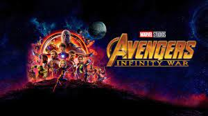
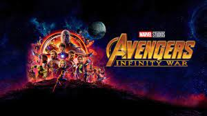
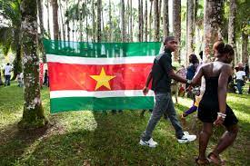

Voorstel Duo Partner
Shafirio Saro is 19 jaar
Gamen en series kijken


Favoriete (eten, kleur, film):

 

Waar is hij geweest?


Wat verwacht je van je klasgenoten en docenten?
Hij verwacht Respect.
Heeft hij bijbaan?
nee hij heeft geen bijbaan maar hij zou het wel willen.
Wat zijn jouw talenten?
zijn talent is fietsen.
Belangrijkste moment in zijn leven?
Uit eten gaan met familie en dat hij met familie is.
Hoe ziet hij zichzelf over 10 jaar?
Dat hij een baan heeft van wat hij heeft gestudeerd.
Wat motiveert hem?
Om zijn diploma te behalen en zijn ouders trots te maken.
Waarom deze opleiding?
Hij heeft voor deze opleiding gekozen, omdat hij zijn vorige opliding niet had gehaald en deze opleiding past meer bij hem.
Wat zijn zijn ambities?
Ervaring opdoen, doorstuderen, goede baan later.
Wat gaat hij na deze opleiding?
Of werken of doorstuderen.